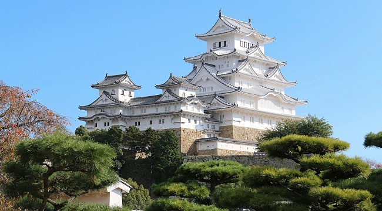

Japan is an island country in East Asia. Tokyo is the country's capital and the largest city. Other major cities include Osaka and Nagoya.Japan is the 11th most populous country in the world, as well as one of the most densely populated and urbanized. About three-fourths of the country's terrain is mountainous, concentrating its population of 126.2 million on narrow coastal plains. Japan is administratively divided into 47 prefectures and traditionally divided into eight regions.
Japan has five main islands that are:
Japan has 21 World Heritage Sites, including Himeji Castle, Historic Monuments of Ancient Kyoto and Nara. Popular foreigner attractions include Tokyo and Hiroshima, Mount Fuji, ski resorts such as Niseko in Hokkaido, Okinawa, riding the shinkansen and taking advantage of Japan's hotel and hotspring network.
Below are hyperlinks to some of the attractions:
Himeji Castle| Attraction | Visitors per day |
|---|---|
| Himeji Castle | 15 000 |
| Mount Fuji | 4000 |
| Hokkaido Ski resorts | 6500 |